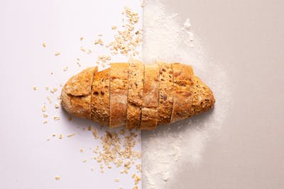

5 Reasons Whole Grains Aren't the Enemy
For years, carbs got a bad reputation. But whole grains — the kind we use in every pastry at Nature's Bakery — are packed with fiber, B vitamins, and sustained energy. Here's why your body actually needs them:
- Sustained energy: Unlike refined carbs that spike and crash, whole grains release energy slowly, keeping you full and focused longer.
- Heart health: Studies show 3 servings of whole grains daily can reduce heart disease risk by up to 22%.
- Gut health: The fiber in whole grains feeds beneficial gut bacteria, improving digestion and immunity.
- Better mood: Whole grains help regulate serotonin production. Yes, bread can actually make you happier.
- Real flavor: Nutty, complex, and satisfying. Whole grain baked goods taste better once your palate adjusts.
At Nature's Bakery, we use 100% whole wheat flour, oat flour, and almond flour. No bleached white flour, no empty carbs.